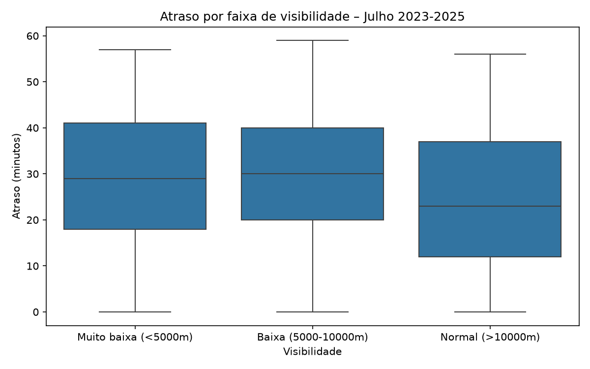
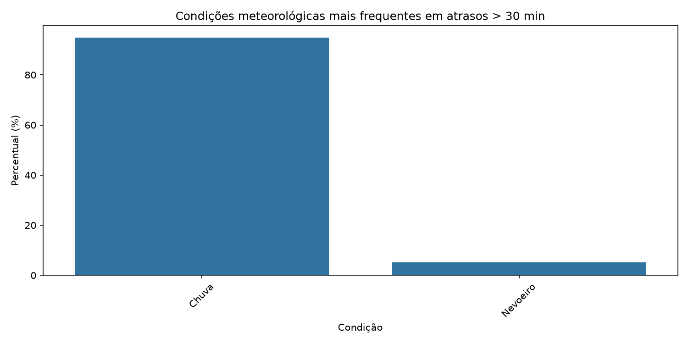
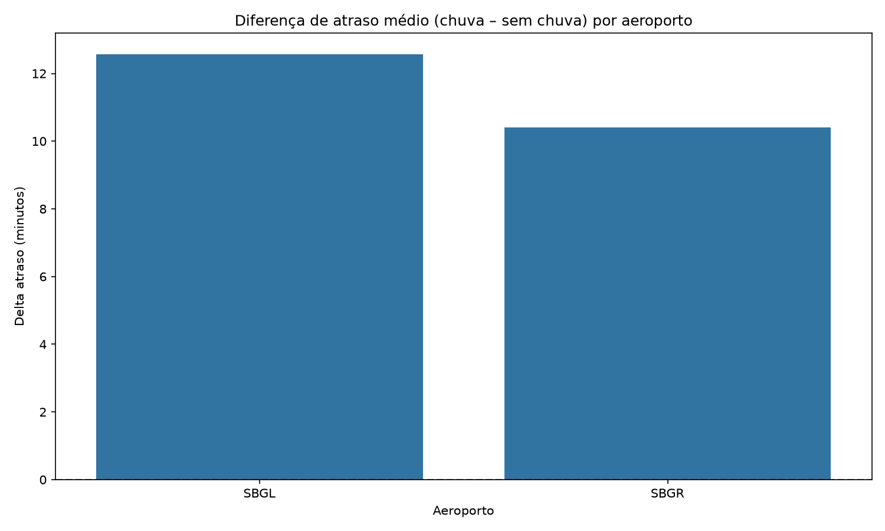
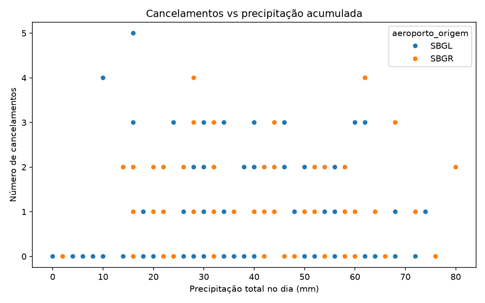
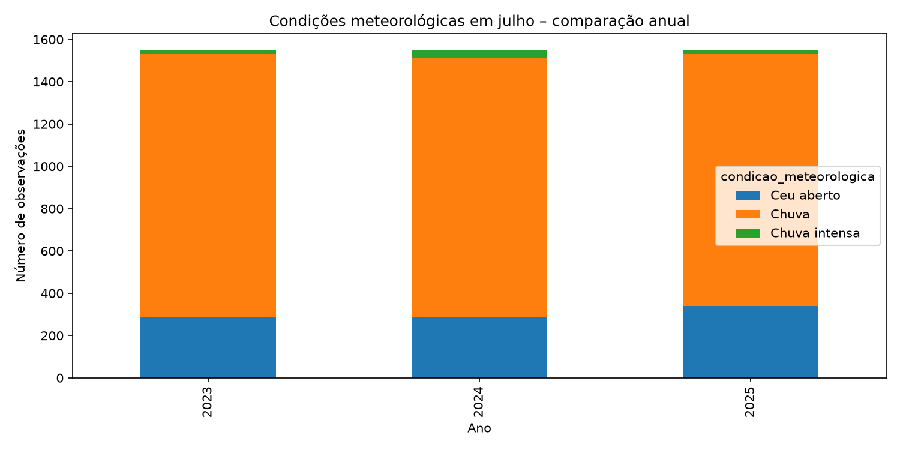

01
Atrasos e Visibilidade
Esta análise busca identificar se os voos realizados durante períodos de baixa visibilidade apresentam maior ocorrência de atrasos.
Relação entre condições meteorológicas e desempenho operacional dos voos
A equipe realizou uma análise de milhares de registros históricos com o objetivo de identificar possíveis relações entre as condições meteorológicas e o desempenho operacional dos voos.
As análises abaixo investigam atrasos, cancelamentos, precipitação, visibilidade, chuva, sazonalidade e outras condições que podem influenciar as operações aeroportuárias.

Esta análise busca identificar se os voos realizados durante períodos de baixa visibilidade apresentam maior ocorrência de atrasos.

Nesta análise são observadas as condições meteorológicas que aparecem com maior frequência durante períodos de atrasos significativos.

O objetivo é comparar os aeroportos e verificar quais apresentam maior impacto operacional em condições de chuva.

Esta análise investiga se dias com maior volume de precipitação acumulada estão associados a uma maior quantidade de cancelamentos.

A análise verifica como os eventos meteorológicos se distribuem ao longo do tempo, buscando identificar padrões sazonais.
O objetivo não é analisar apenas um voo isoladamente, mas utilizar milhares de registros históricos para encontrar padrões e possíveis relações entre as condições meteorológicas e o desempenho operacional.
Baixa visibilidade está relacionada a mais atrasos?
Maior precipitação está relacionada a mais cancelamentos?
Quais aeroportos sofrem maior impacto da chuva?
Existe um padrão sazonal nos eventos meteorológicos?